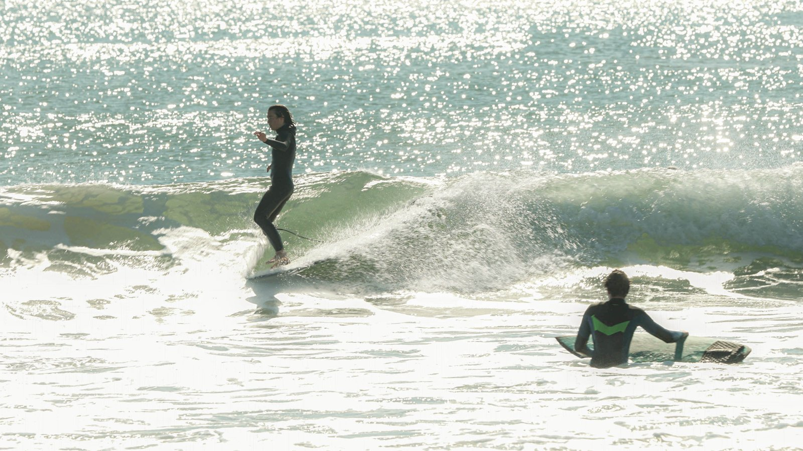
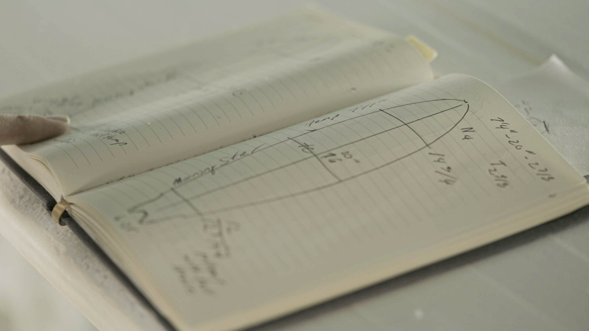
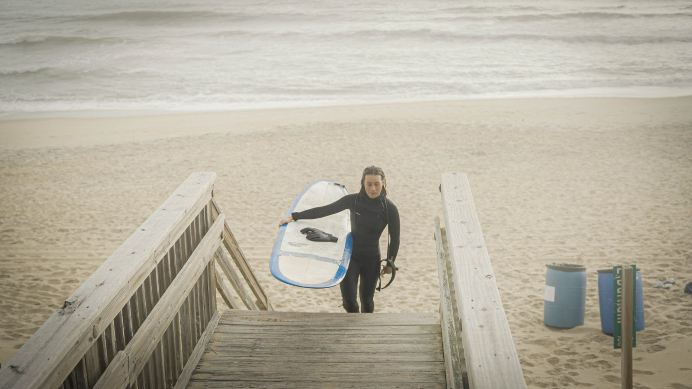
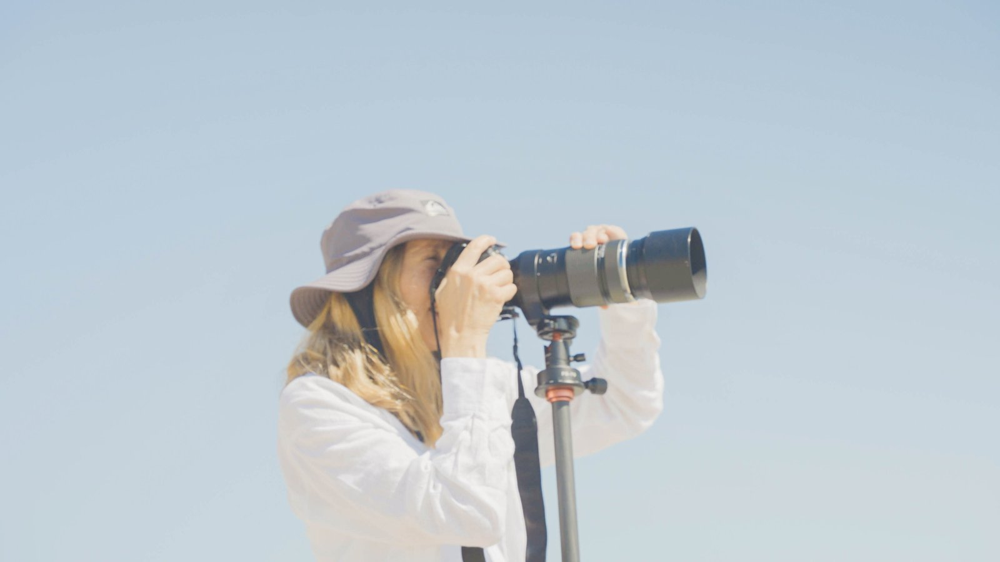
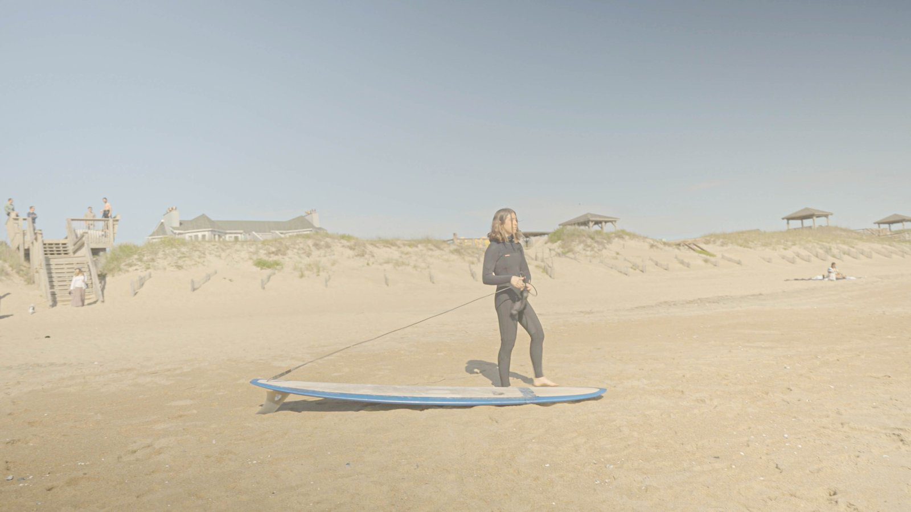
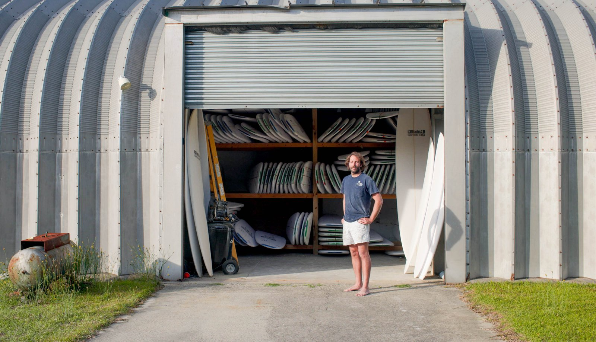
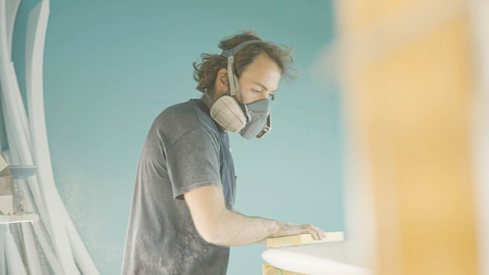
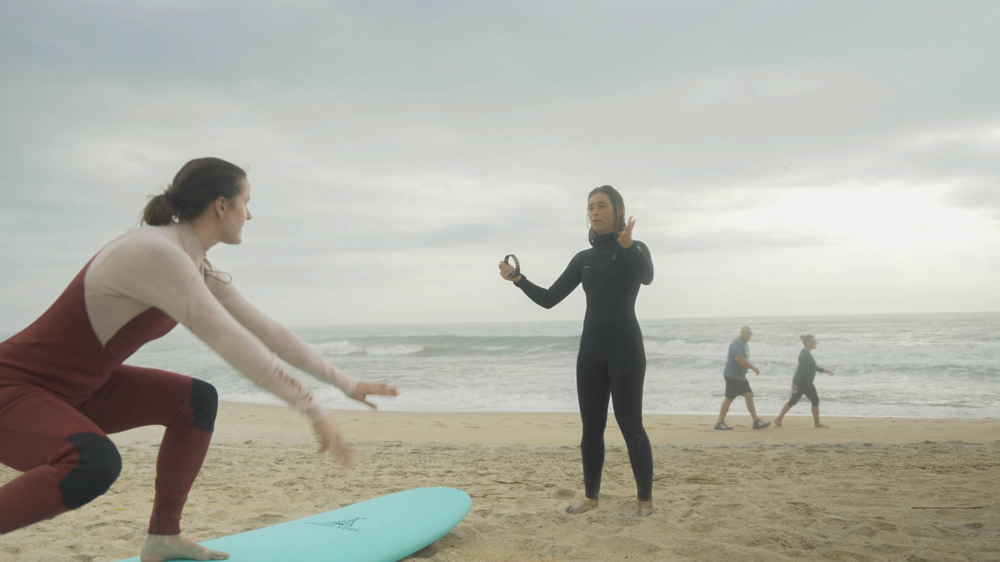
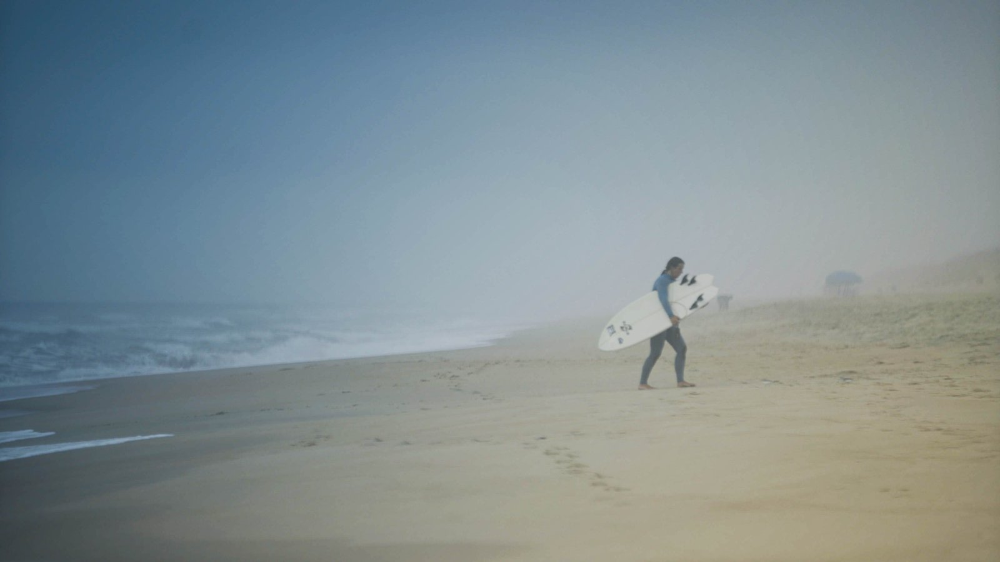
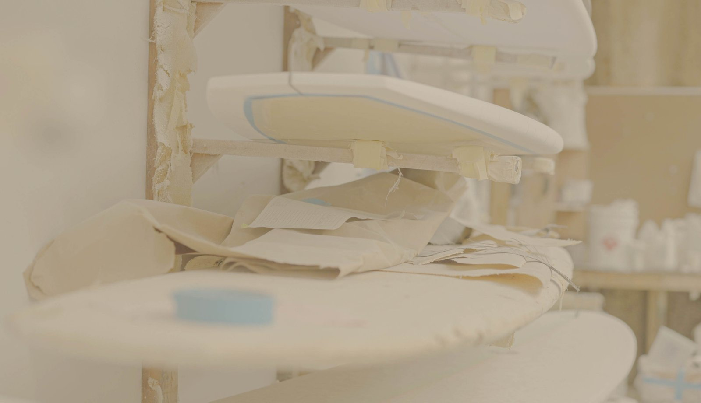

- Project:
-
In May 2026, I spent a week on North Carolina’s Outer Banks, producing an independent documentary that, as part of the Carolina Photojournalism Workshop. I had one week to record and produce my film with a public screening on the last day of the trip.
My story focused on Julianna Forte, She is a rare young talent, and an inspiration to the female surfers of the Outer Banks. As Leo Ravina, her shaper, puts it… “A lot of people do stuff that’s in style, but not a lot of people do stuff with style.” However, Julianna’s love for surfing was never about fame or sponsorship, it was always about the pure joy of being in the water.
- Role:
- Videographer & Editor
Awards: CPOY 81 Multimedia: Online Storytelling Gold









